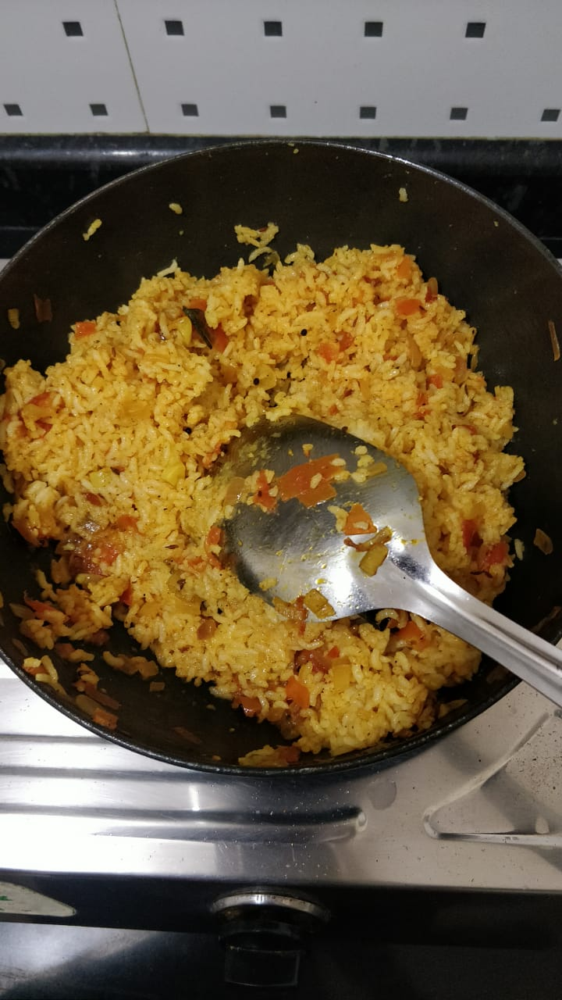

Tomato Rice

Main Ingredients
- Cooked rice: 2 cups (preferably cooled, leftover rice works best)
- Tomatoes: 2 large or 3 medium (chopped finely or pureed)
- Onion: 1 medium (sliced or chopped)
- Green chili: 2
- Ginger-garlic paste:1 tsp
How to Prepare Tomato Rice
- Prepare the rice: If you’re cooking fresh rice, let it cool slightly and fluff it up.
(Use 1 cup raw rice = ~2 cups cooked)
- Tempering (Tadka): In a pan:
- Heat 2 tbsp oil or ghee.
- Add mustard seeds. Let them splutter.
- Add cumin seeds, urad dal (if using), and fry till light golden.
- Add curry leaves and green chilies.
- Sauté onions & spices
- Cook tomatoes
- Mix in rice, garnish and serve
Home